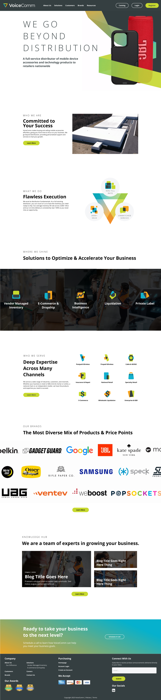
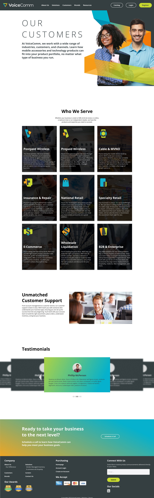
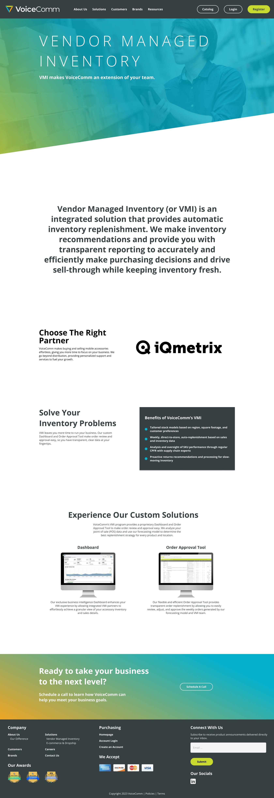
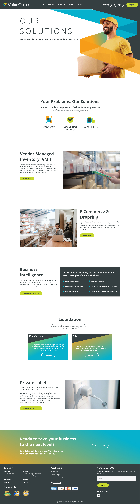
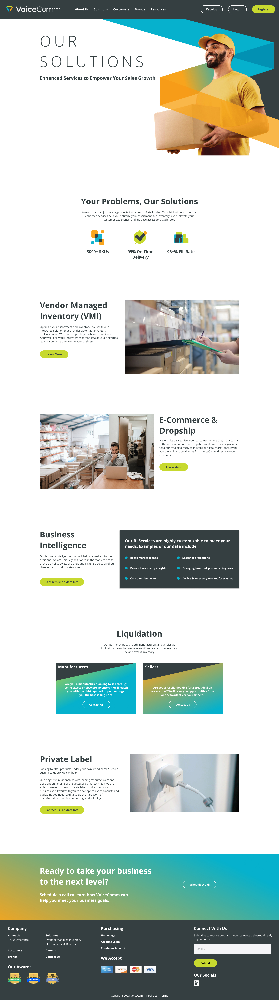
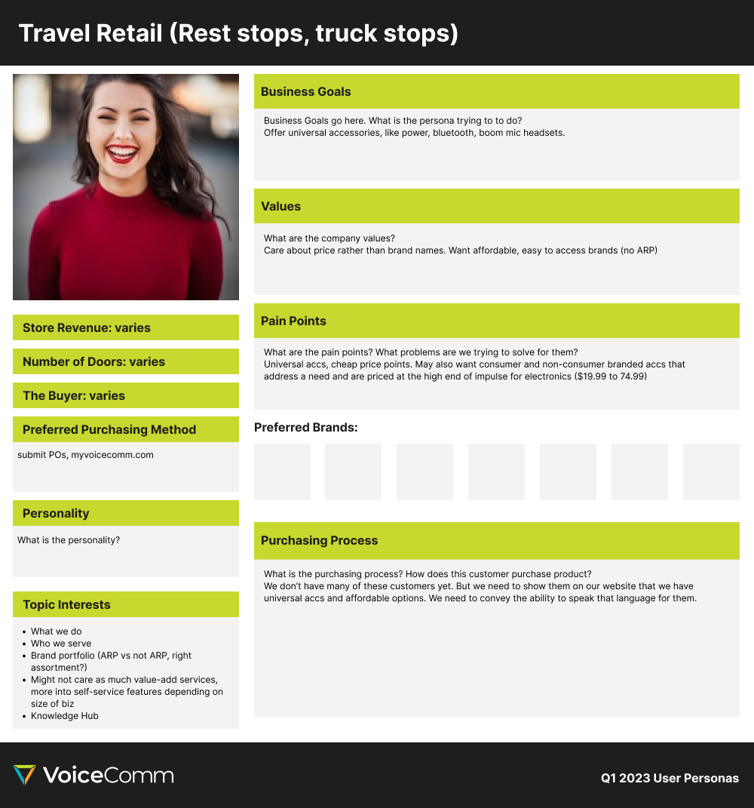
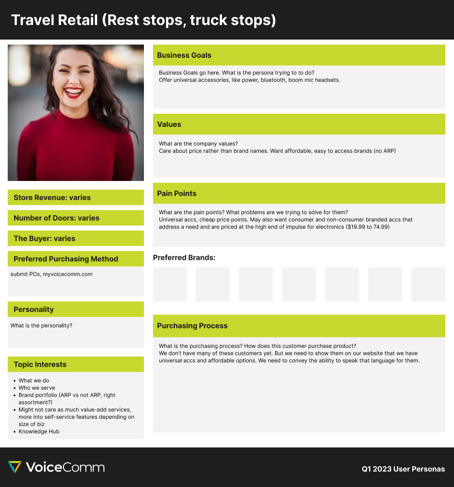
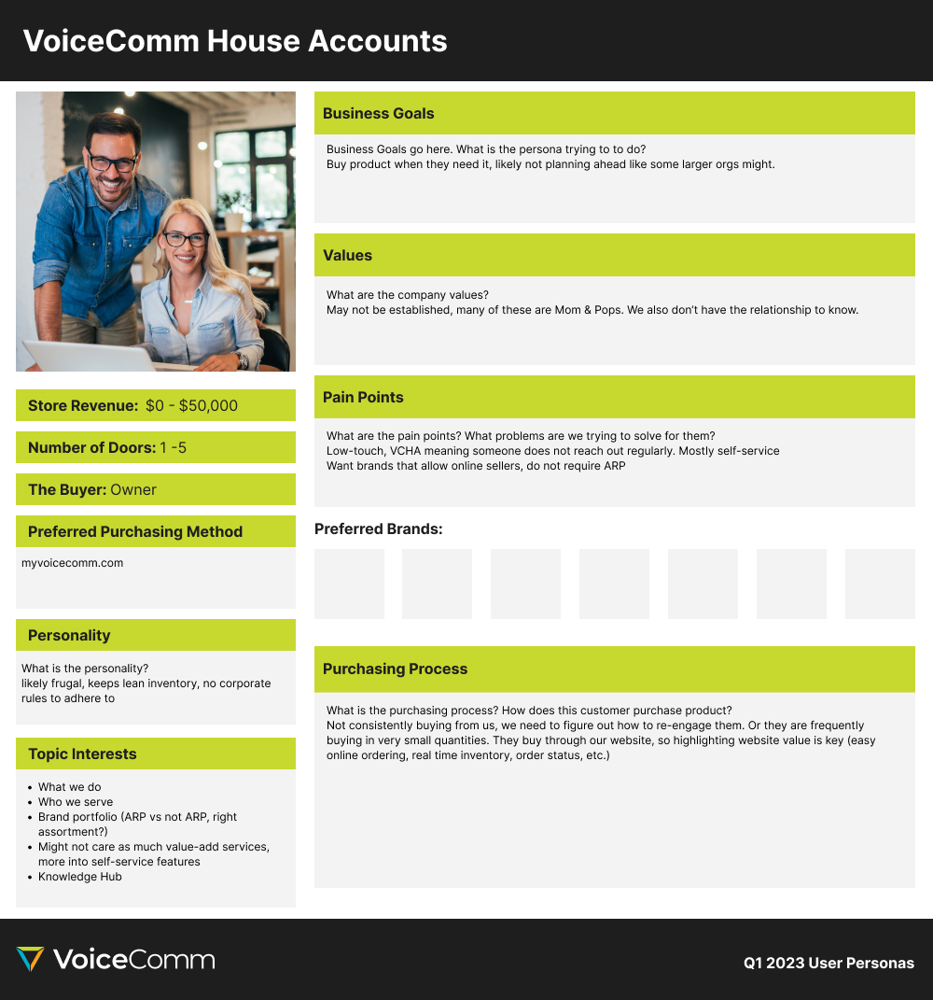
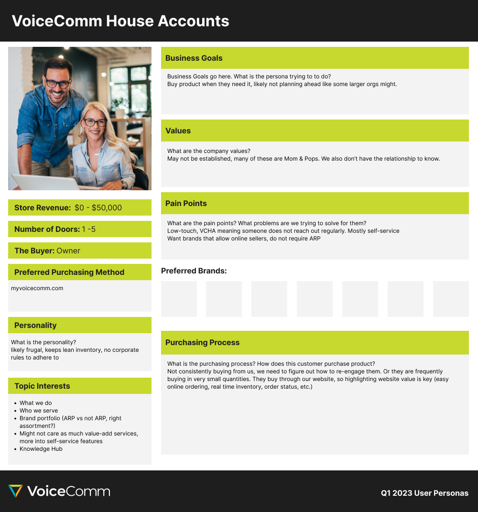

PROTOTYPE CREATION
After finalizing the content strategy, I worked with the Creative Director and Senior Designer to create high-fidelity mockups in Figma. These mockups were used to generate prototypes and present the design and UX concepts to company leadership, leveraging Figma's advanced prototyping capabilities. Below this section are the steps taken to create this prototype.



 

 

 
